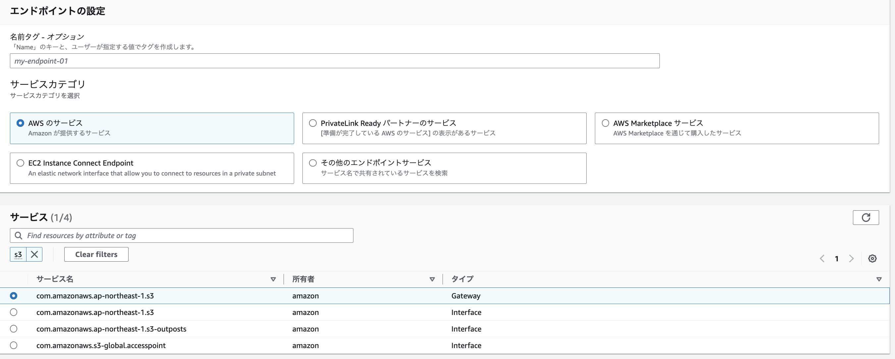
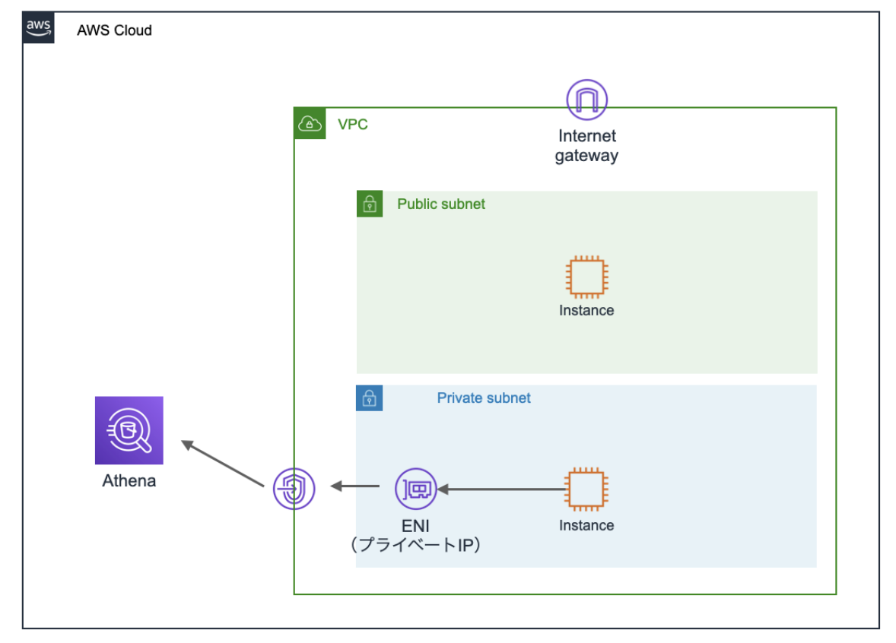

ネットワーク設計¶
VPCエンドポイントや、VPN接続などが問われることが多いので、以下を確認しておくと良い
VPCエンドポイント¶
AWSのサービス（パブリックネットワークに存在）に対してアクセスする際、インターネットを経由せずにAWS内部の通信で接続するために利用されるのがVPCエンドポイントである。
VPCエンドポイントにはゲートウェイ型とインターフェース型が存在する
ゲートウェイ型¶
S3とDynamo DBが対応しており、料金がかからない特徴がある。
ゲートウェイであるので、インターネットGWなどと同様、ルーティング設定された条件を満たすとVPCエンドポイントを経由して、リソースにアクセスする。

作成としては以下の手順を踏む
VPCサービスのエンドポイント機能を選択
com.amazonaws.ap-northeast-1.s3のGWを選択
設定するVPCを選択
設定する
ルートテーブルを選択バケットポリシー側で設定したVPC-Endpointからのアクセスを許可する


インターフェース型¶
50種類以上のサービスが対応しており、S3はインターフェース型の接続も可能。
データの転送とサービス利用時間に応じて課金する必要がある。
VPC内のサブネットにENIを払い出し、ENIにアクセスすることで対象のAWSサービスにアクセスする。
AWS PrivateLinkという技術が利用される。

作成としては以下の手順を踏む
VPCサービスのエンドポイント機能を選択
com.amazonaws.ap-northeast-1.s3のInterfaceを選択
設定するVPCを選択
設定する
サブネットを選択適用する
セキュリティグループを選択バケットポリシー側で設定したVPC-Endpointからのアクセスを許可する

サードパーティサービスの提供¶
自作のサービス（サードパーティサービス）を他のVPCやオンプレに対してプライベートに利用してほしい場合はNLBを経由して、インターフェース型のVPCエンドポイントを払い出すことができる。
ゲートウェイ型とインターフェース型の違い¶
ゲートウェイ型のEndpointのIPは、内部IPではなく外部IPであるという点が特徴的である。
すなわちAWS内部からAWS内部への通信であるものの、VPC内→エンドポイントへの通信は外部のIPへのアクセスに見える。
一方で、インターフェース型はENIがVPCの内部にサービスが立ち上がっているように見えるので、VPC内部→VPC内部の通信で完結する。
この辺りは2つのVPCエンドポイントの違いを知るが参考になる。
さらに、VPC外からの接続について差分がある。
GW型では通信を設定し合ったVPCのみで通信が可能であり、そのVPCと接続している他の環境（オンプレや別のVPC）から Endpointを経由することはできない。
一方で、インターフェース型は、VPC外からもVPC自体への接続を確保してしまえば、 Endpointを経由して対象サービスにアクセスすることができる。